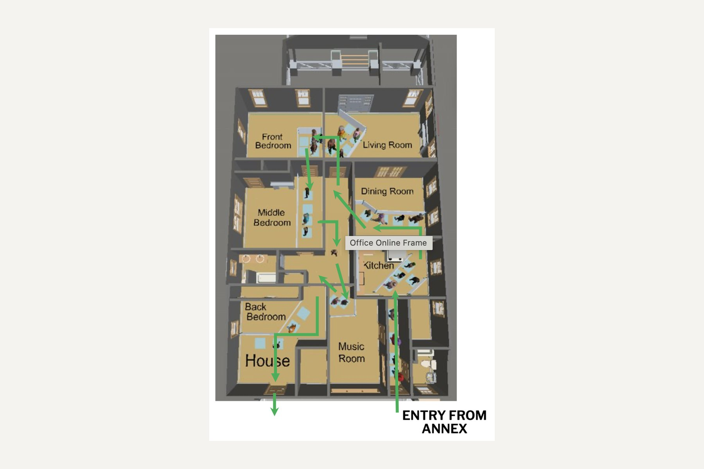
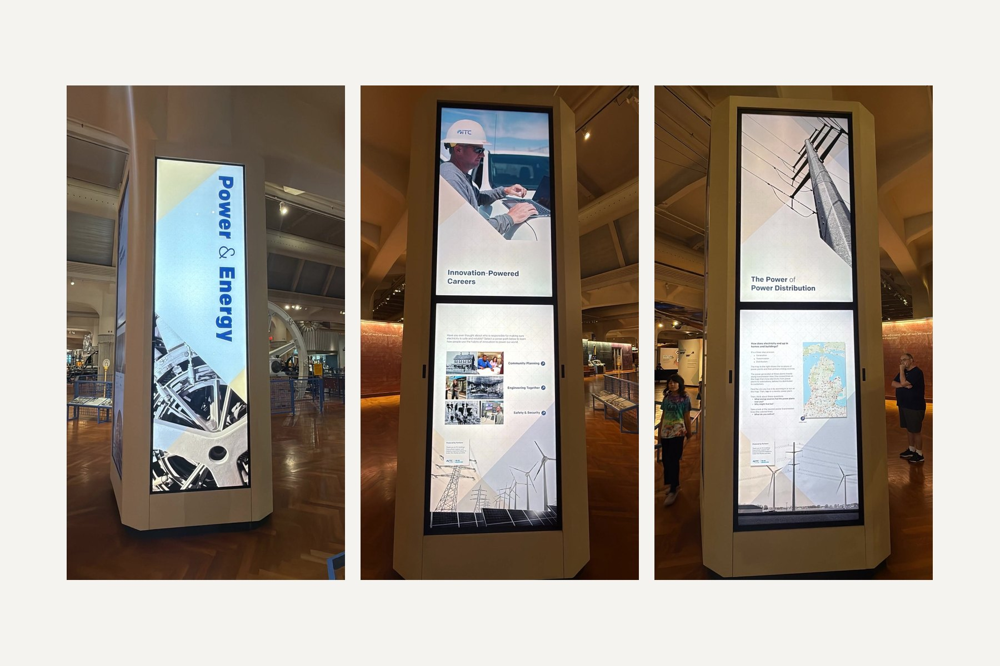
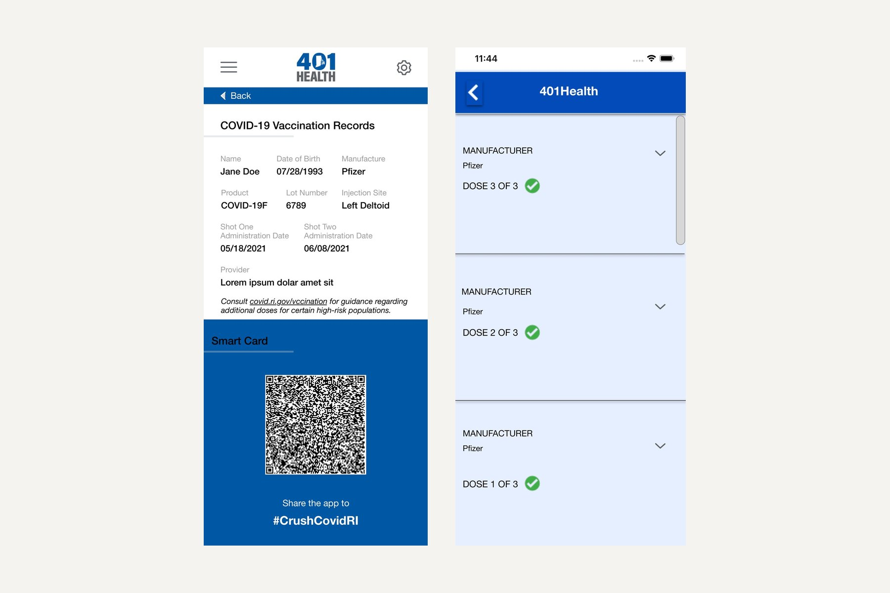
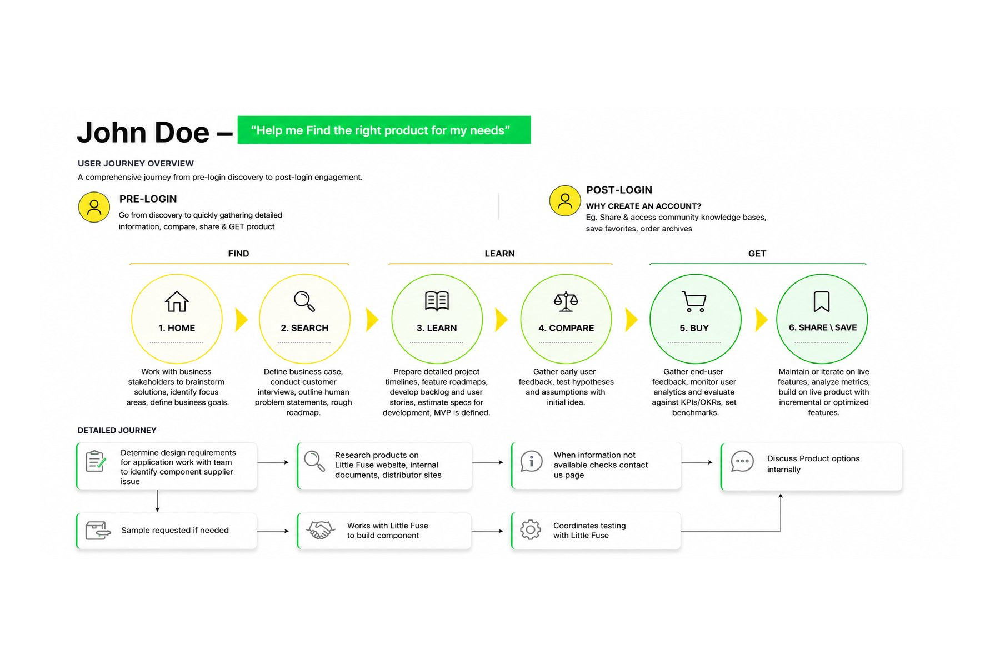

Projects

The Henry Ford Jackson Home Visitor Flow Simulation
UX Researcher | Experience Design

Designing an Interactive Museum Experience for Power & Energy
UX Designer| Experience Design | Project Management

Rhode Island State COVID Vaccine App/401 Health App
UX Designer| UX Researcher | UX Consultant

Reimagining How Engineers Discover Littelfuse Products
UX Consultant | UX Designer |UX Researcher